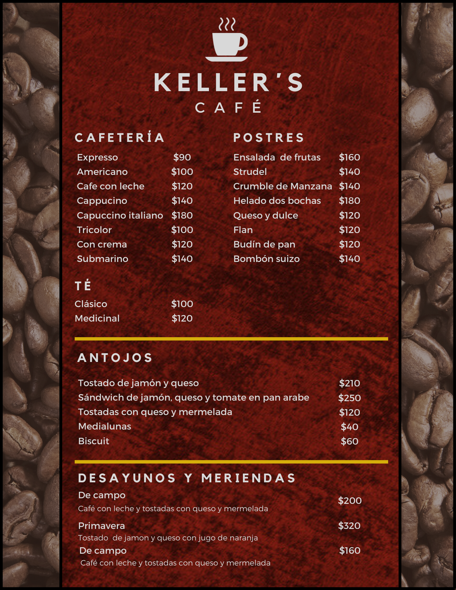
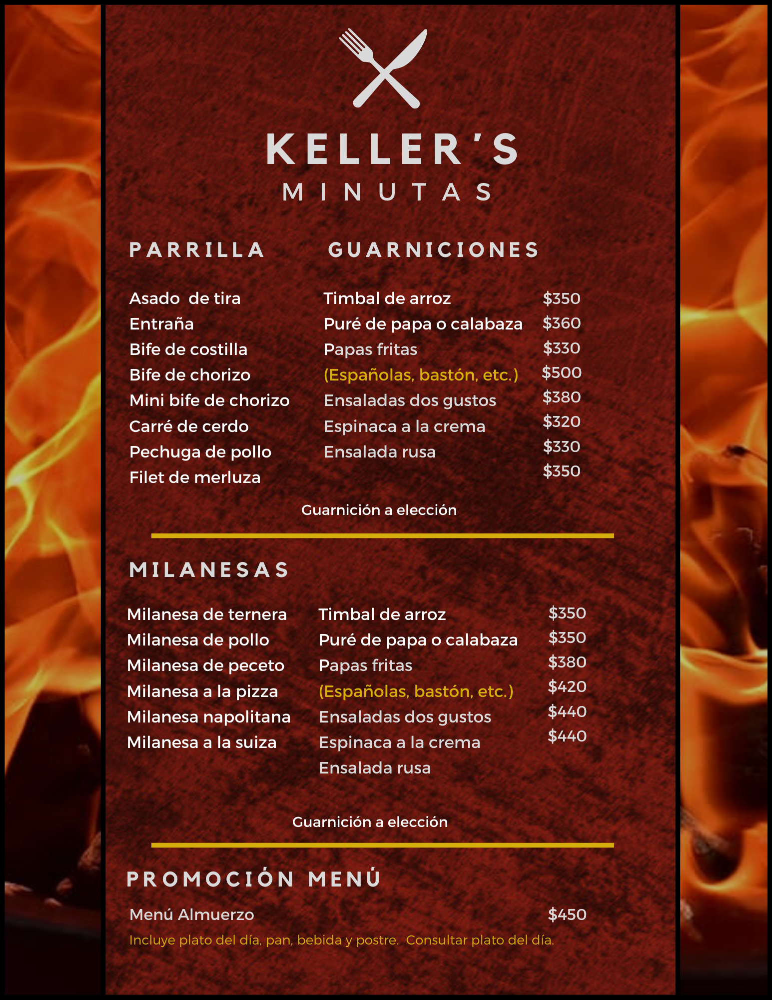
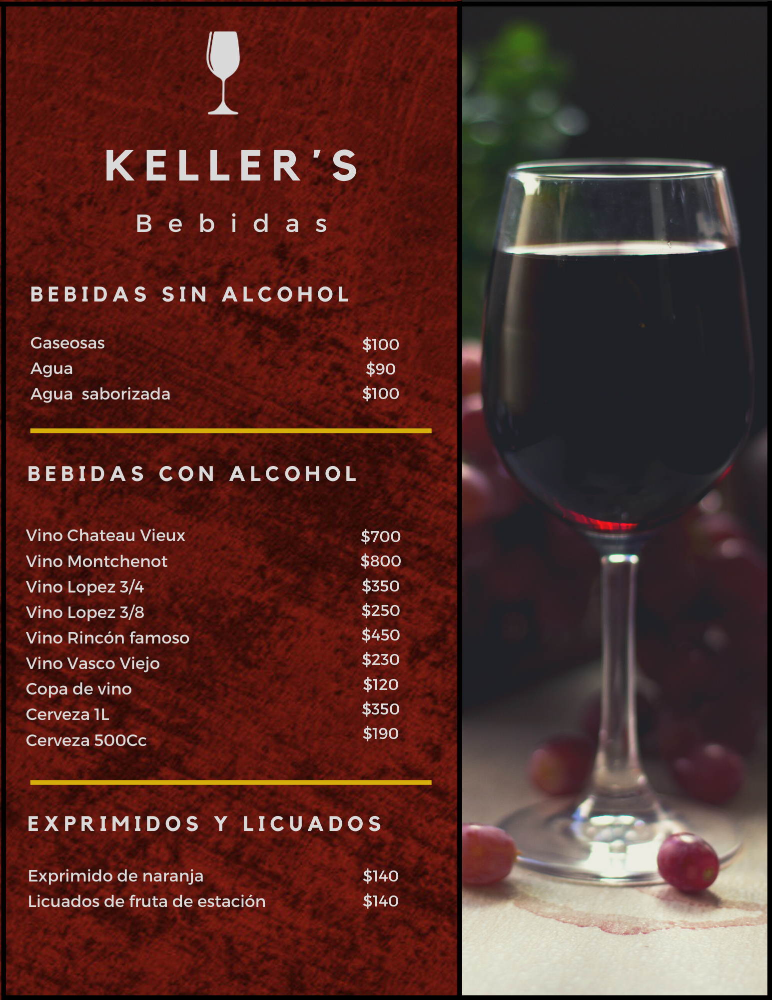

Desde 1991, Keller's busca brindar una experiencia gastrónomica única a todos sus clientes. Con ese objetivo en mente, nos pusimos un lema por delante, el cual consideramos la receta perfecta: serenidad, cordialidad y, sobre todo, la existencia de un ambiente familiar. De esta manera creamos un espacio de intercambio, en donde tanto familias como amigos pueden venir a pasar el rato mientras comen o toman algo. Nuestra especialidad, los platos clásicos, son los que han hecho este lugar lo que es, y esperamos que, al probarlos, puedas sentir los sentimientos puestos en ellos.